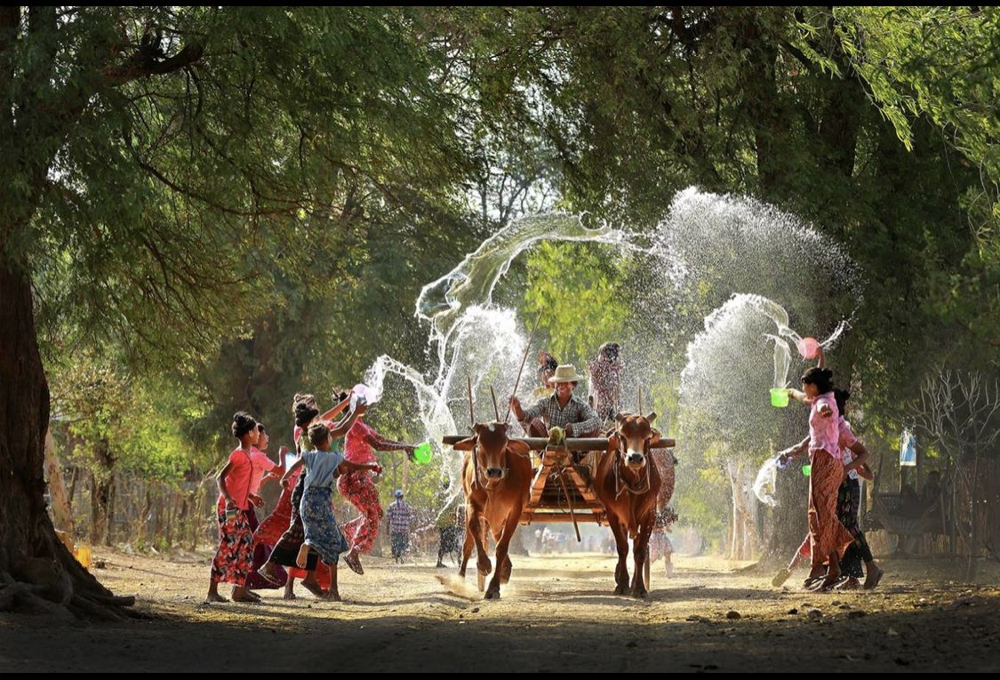
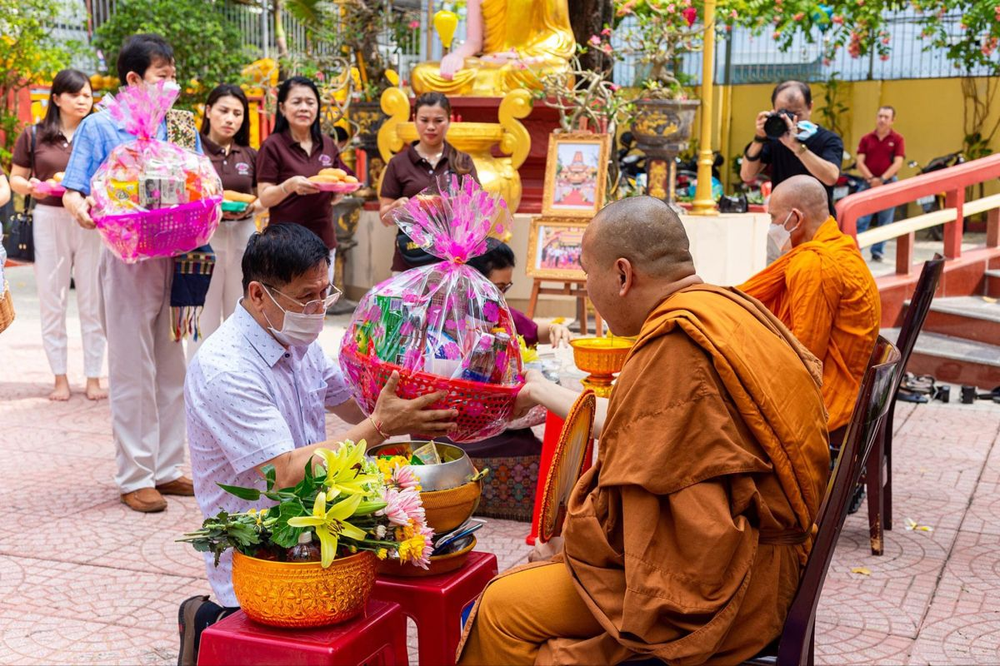
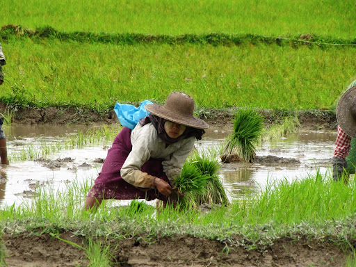
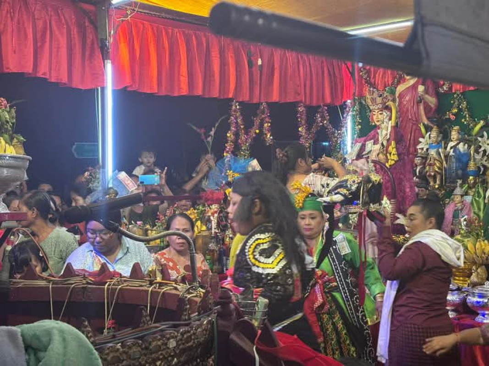
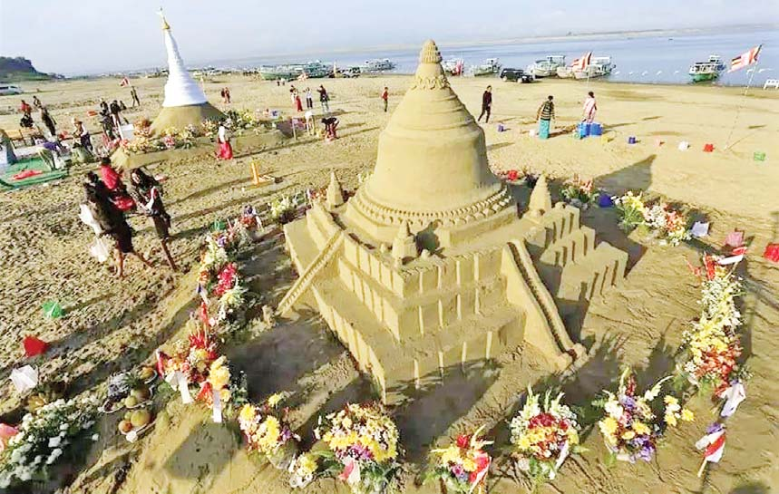

တန်ခူး
သင်္ကြန်၊ နှစ်သစ်ကူး၊ ရေကစားပွဲ

သင်္ကြန်၊ နှစ်သစ်ကူး၊ ရေကစားပွဲ
ညောင်ရေသွန်းပွဲ၊ ဘုရားဖူးရာသီ
စာတော်ပြန်၊ ပညာရေးနဲ့ ဓမ္မလှုပ်ရှားမှု

ဝါကပ်စတင်ခြင်း၊ လှူဒါန်းရာသီ

နတ်ပွဲ၊ လူထုစည်ကားမှု၊ ပျော်ပွဲရွှင်ပွဲ
လှေလှော်ပွဲ၊ မြစ်ရေရာသီပွဲတော်
မီးထွန်းပွဲ၊ ကန်တော့ပွဲ၊ မိသားစုချိန်
မီးပုံးပျံ၊ တန်ဆောင်တိုင်၊ မသိုးသင်္ကန်း

အနုပညာ၊ စာပေ၊ ဇာတ်ပွဲရာသီ
ဘုရားပွဲ၊ ခရီးသွားချိန်၊ ဈေးပွဲ
ထမနဲထိုးပွဲ၊ မျှဝေခြင်း၊ ပေါင်းစည်းမှု

ဘုရားဖူးပွဲ၊ ပေါင်းကူးချိန်၊ နှစ်ပိတ်ပွဲ
နွေရာသီ
မြန်မာနှစ်သစ်ကူး ရေကစားပွဲ
တန်ခူးလမှာ သင်္ကြန်ရေကစားပွဲ၊ ကုသိုလ်ပြုခြင်းနဲ့ နှစ်သစ်ကြိုဆိုမှုတွေကြောင့် မြန်မာတစ်နိုင်ငံလုံးအတွက် အတက်ကြွဆုံးအချိန်ဖြစ်ပါတယ်။